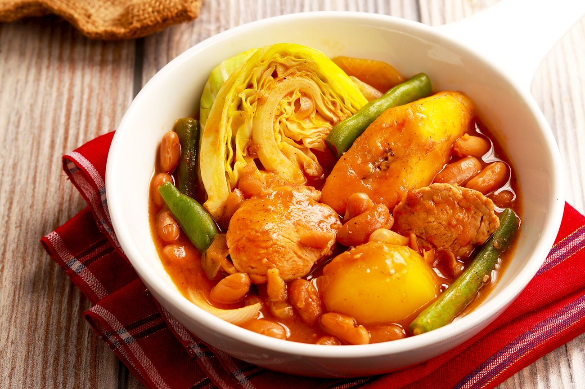

Pochero

Description
Pochero is a beloved Filipino stew that was created as a variation on the Spanish puchero. It's made with a combination of meat (beef, but it can also be made with chicken or pork), tomatoes, onions, garlic, patis fish sauce, peppercorns, chickpeas, leeks, plantains, potatoes, cabbage, green beans, and bok choy.
Ingredients
- 3 tablespoons olive oil
- 2 plantains, peeled and quartered
- 2 small potatoes, quartered
- 1 onion, chopped
- 2 cloves garlic, minced
- 4 pounds chicken legs, thighs, and wings
- 2 (4 ounce) links chorizo de bilbao (spicy Spanish semi-cured sausage), quartered
- salt and pepper to taste
- water to cover
- 2 tomatoes, diced
- 1 (15.5 ounce) can garbanzo beans, drained
- 1 small head cabbage, chopped
Steps
- Heat the olive oil in a large pot over medium heat; fry the plantains and potatoes in the hot oil until crisp on the outside, 5 to 7 minutes. Remove from the pot and set aside, keeping the oil in the pot.
- Cook and stir the onion and garlic in the hot oil until the onion is translucent, 5 to 7 minutes. Add the chicken and chorizo; season with salt and pepper. Cover the pot and cook for 5 minutes.
- Pour enough water over the chicken to cover completely; bring to a simmer and cook for 10 minutes. Add the tomatoes, cover, and cook another 10 minutes. Stir the plantains, potatoes, garbanzo beans, and cabbage into the mixture. Cook covered until the cabbage is wilted and everything is hot, about 5 minutes more. Serve hot.